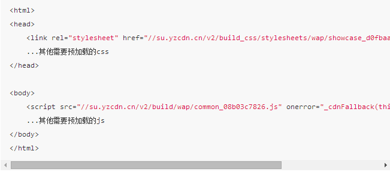

参考
第一个版本，简单粗暴有点痛
1、建一个独立的页面，里面索引了各种需要预加载的css、js，代码类似下面这样。

2、 在每个页面加入一个iframe（一般通过base模板统一加），这样每个页面打开的时候都会加载上面这个页面。�假设上面的页面的url是 https://xxx.com/common/prefetching.html 那么我们每个页面底部都有这么一行代码
<iframe src="https://youzan.com/common/prefetching.html" sytle="display:none;"></iframe>
第二个版本
目前看来，上面这个 File Prefeching 的方案是有效的。不过这种是最简陋的试验版，存在几个问题
- 1.prefetching.html 里的js会被执行，然后不可避免地会有一堆js错误 —— 看着难受~
- 2.通过iframe 加载 prefetching.html 会影响到当前页面相关资源的加载速度
- 3.每次打开页面都会加载一次 prefetching.html，虽然里面的静态文件都已经在第一次打开的时候被cache住了不会重复下载，但无谓多一个请求终究是没必要
于是，我们上线使用的版本是这样的
// 打开一个iframe，下载之后页面可能需要的js/css
setTimeout(function() {
var lastOpenTime = 0;
var nowTime = (new Date()).getTime();
try {
lastOpenTime = window.localStorage.getItem('staticIframeOpenTime');
} catch (e) {}
if (lastOpenTime > 0 && (nowTime - lastOpenTime
< 24 * 3600 * 1000)) {
// 24小时打开一次iframe
return;
}
var iframe = iframe.css('display', 'none');
iframe.attr('src', 'https://youzan.com/common/prefetching.html')
iframe.appendTo(document.body);
try {
window.localStorage.setItem('staticIframeOpenTime', nowTime);
} catch (e) {}
}, 3000);
// 延时3秒钟加载prefetching.html